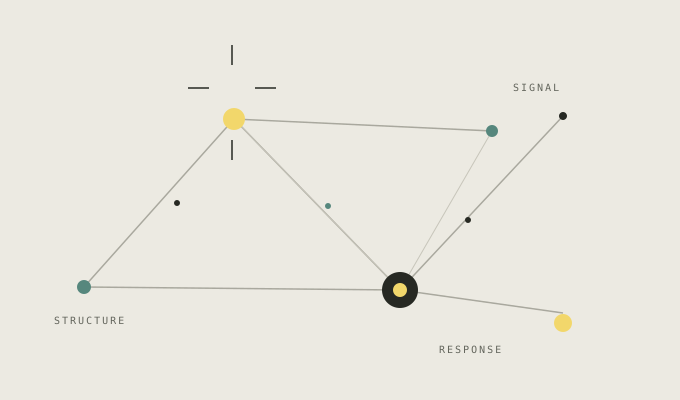

01 / FOUNDATION
HTML — THE STRUCTURE
Every meaningful experience starts with a clear structure.
Semantic HTML gives each part of this page a purpose — from landmarks and headings to labeled controls and a real image.
An interactive frontend experiment
A living exploration of responsive design, dynamic data, and human-centered interactions — built with HTML, CSS and JavaScript.
A little context

This project explores the small decisions that turn a static page into a useful experience: clear structure, considered visual language, and interactions that respond with purpose.
An independent demonstration built for the Cognifyz Technologies Front-End Development Internship.
See how it comes togetherThree parts, working together
A good interface isn't one thing. It's a conversation between structure, expression, and response.
Every meaningful experience starts with a clear structure.
Semantic HTML gives each part of this page a purpose — from landmarks and headings to labeled controls and a real image.
Color, layout and movement turn structure into an interface.
CSS custom properties coordinate both themes; grid, flexbox, and fluid type adapt the layout to different screens.
Interactions make the interface respond to people.
JavaScript powers the theme, connected illustration, live API explorer, responsive menu, and form validation.
A small interaction study
Static content has one state. An interactive experience changes with you. Pick a signal and watch the preview adapt.
One clear signal stands out from the noise.
A live connection
Public sample data, fetched live and transformed into an interactive reading experience.
A thoughtful little form
A small form, a little validation, and a more thoughtful experience.
Validated details are sent through EmailJS after configuration. Email delivery is only confirmed by the service response.